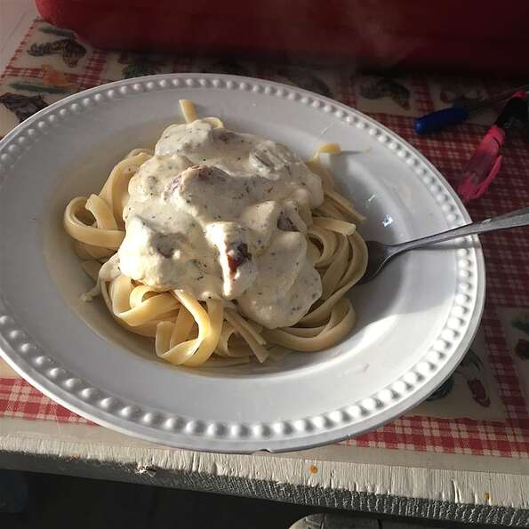

Alfredo

A creamy sauce over noodles.
Ingredients
- 8 ounces dry fettuccine pasta
- 8 ounces cream cheese
- 3/4 cup grated parmesan cheese
- 1/2 cup margarine
- 1/2 cup milk
- 1 teaspoon garlic powder
- 1/4 teaspoon dried basil
- 1 pinch ground nutmeg
Directions
- Bring large pot of lightly salted water to a boil. Add pasta and cook for 8 to 10 minutes or until al dente; drain.
- In a medium saucepan, combine cream cheese, Parmesan, margarine, milk, garlic powder and basil and
stir over low heat until smooth and creamy, 10 to 15 minutes.
Toss sauce with pasta and sprinkle with nutmeg. Serve.